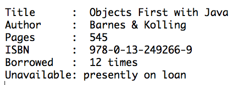
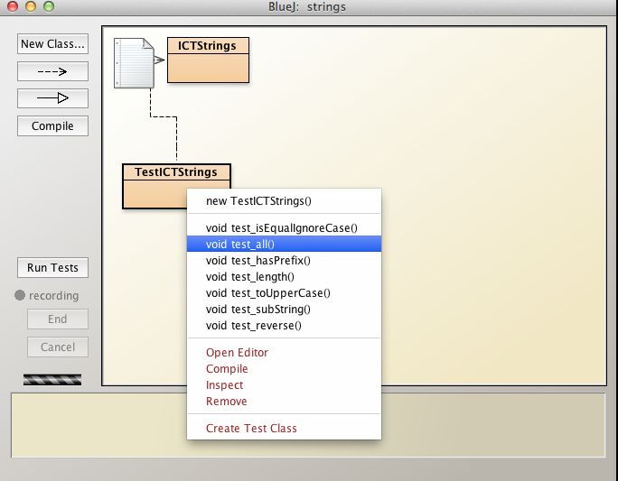

Readme
Assignment 1: This assignment is based on materials contained in the slide decks and labs in the first 3 topics, namely, Introduction to Java programming language, Analysis & refactoring class and Object Interaction.
Setup
Download the archive assignment-1.zip available here and expand to a directory workspaceBlueJ/assignments/assignment-1.
Your directory structure should be as depicted in Figure 1.

The supplied project contains skeleton code which forms the basis of the questions that follow.
Assignment completion guidelines
- Submission material:
- Complete the assignment by modifying the classes in the folder assignments-1 as required in the questions that follow.
- This folder should have been generated when you expanded the downloaded file assignment-1.zip.
- When you are ready to submit, compress the folder assignments-1.
- Before you compress the folder ensure that the downloaded zip file is not present in your assignments folder otherwise naming confusion is likely to occur.
- Upload your completed source code in the single file assignment-1.zip.
- Each student's file will be automatically stored in separate folders on Moodle thus ensuring naming conflicts will not arise.
- Complete the assignment by modifying the classes in the folder assignments-1 as required in the questions that follow.
Question 1
Develop a Book class in accordance with the following specification:
- Package private fields:
String title
String author
String isbn
int numberPages
boolean borrowed
int numberBorrowings
- The constructor signature is:
Book(String title, String author, String isbn)
- Write a setter method for the numberPages field. Here is the header:
public void setPages(int numberPages)
- Assume that the book resides in a library. Write a method to facilitate borrowing the book:
- Set borrowed to true.
- The value of this boolean field should be true if a book is borrowed (on loan), else false.
- Increment numberBorrowings.
- This field keeps track of the number of times the book has been borrowed.
- Set borrowed to true.
public void borow()
- Write method to check if a book is presently out on loan:
public boolean isBorrowed()
- Write a method to return a book to the library.
public void returns()
- Write a method to print details similar to that shown in Figure 1 for a sample book.
public void printDetails()

- Develop a test class TestBook in which you:
- Write a public method testBook within which you
- Declare and initialize a new book
- Change the state of the book object so that when printDetails is invoked the output matches that in Figure 1.
- Write a public method testBook within which you
Question 2
Develop a Circle class with the following API:
- Do not include any of the graphics methods present in the BlueJ Circle class that we encountered in the labs.
public class Circle {
public Circle(double radius)
public Circle(double radius, double xCentre, double yCentre)
public double area() //area of circle
public double areaSector(double angleRadians) //area of sector of circle
public double circumference()
public void move(double xCentre, double yCentre) //relocate the circle
public void changeSize(int radius) //change size of circle by altering radius.
}
The instance variables are:
private double radius;
private double xCentre;
private double yCentre;
Avoid code duplication in the constructors by implementing and invoking a private method setState:
private void setState(double radius, double xCentre, double yCentre)
Do not rely on the default values of primitive variable. Instead, where necessary, set them equal to a specific value of your choosing.
Apply style and documentation matching the accompanying Cone class.
Use the Math library to evaluate properties as follows:
// Area of circle:
Math.PI*Math.pow(radius, 2)
// Perimeter of circle:
2*Math.PI*radius
// Area of sector of circle subtended by angle angleRadians:
0.5*Math.pow(radius, 2)*angleRadians
In general, except in the case of areaSector, enforce a condition rendering it impossible for a user to successfully input a negative number as an argument (actual parameter).
- If a user attempts to enter a negative number provide a short warning message.
- Consider providing a private method boolean isValid(double value) within which you check that each inputted value is valid.
- In the case of areaSector, use the library method Math.abs(double) to ensure that calculation of area is always performed using a positive angle.
If a user inputs an angle greater than 2 PI in areaSector use modular arithmetic (the Java remainder operator %) or otherwise to ensure the angle used in calculations is in the range [0, 2 PI).
- Note: any angle in the range (- infinity, + infinity) is a valid angle. However, we require angles to be in the range [0, 2 PI), that is, in the range greater than or equal to zero and less than 2 PI.
Question 3
Open ICTStrings class source file located in the strings project.
- Complete the class by adding the following methods, the skeletons of which are already in place:
Task 1
isEqual:
- signature public static boolean isEqual(String s1, String s2).
- return true if the strings are equal
- else false.
Task 2
isEqualIgnoreCase:
- signature public static boolean isEqualIgnoreCase(String s1, String s2).
- return true if the strings are equal, ignoring case
- else return false.
Task 3
hasPrefix
- signature public static boolean hasPrefix(String s1, String prefix)
- return true if s1 begins with prefix
- else return false
Task 4
length
- signature public static int length(String s1, String s2)
- concatenate the strings s1 and s2.
- evaluate the length of the concatenated string
- return the evaluated length
Task 5
toUpper
- signature public static String toUpper(String s1)
- return a string whose characters match those in s1 but are all upper case
Task 6
endsWith
- signature public static String endsWith(String s1, String suffix)
- return a boolean whose value is true if s1 ends with suffix, else return false.
Task 7
subString
- signature public static subString(String s1, int beginIndex, int endIndex)
- return string a subset of s1 beginning at beginIndex and whose final index is endIndex.
Task 8
reverse
- signature public static String reverse(String s1)
- return a string that is equal to s1 reversed.
- Hint: use StringBuilder
- consider searching stackoverflow for various options.
- Hint: use StringBuilder
A test class TestICTStrings that includes test data is provided to facilitate testing of the methods above (See Figure 1).
- You can test the methods individually or
- Collectively by invoking testAll.
The expected test results are shown in Figure 2.

Question 4
This question requires that you modify the 24-hour clock we encountered in the labs.
-
The classes Clock, ICTSkillsClock, ClockDisplay and NumberDisplay apply to the question.
-
You are not required to make any changes to Clock or NumberDisplay.
-
The modified clock display is shown in Figure 1. It displays seconds in addition to displaying hours and minutes.
-
It is also necessary to add new behaviours (methods) to both ICTSkillsClock and ClockDisplay.
-
The changes required to ICTSkillsClock and the ClockDisplay classes are described below.

Task 1
In ICTSkillsClock:
- Implement methods with the following headers:
- These methods should each invoke methods of the same name in ClockDisplay.
public void resetSeconds(int value)
public void resetMinutes(int value)
public void resetHours(int value)
Task 2
In ClockDisplay:
- Introduce a new NumberDisplay field to represent seconds.
- Initialize this field in the constructor.
- Modify the existing method updateDisplay to include seconds.
- Implement methods with the following headers:
public void resetSeconds(int value)
public void resetMinutes(int value)
public void resetHours(int value)
- Implement the method public void timeTick() in ClockDisplay.
- Increment seconds.
- When sixty seconds have elapsed increment minutes, ensuring seconds display recommences at zero.
- When sixty mintues have elapsed increment hours, ensuring minutes recommences at zero.
- When twenty four hours have elapsed reset entire display to zero (00:00:00).
Note
The purpose of these methods is to facilitate testing. For example, when you have completed the refactoring:
- Instantiate ICTSkillsClock.
- Start the clock. The display format is hours:minutes:seconds.
- Observe that the seconds display increments.
- Reset seconds to, say, 58.
- Observe that the transition from 00:00:59 to 00:01:00 occurs correctly.
- Reset minutes to 59.
- Observe that the transition from 00:59:59 to 01:00:00 occurs correctly.
- Reset hours to 23 and minutes to 59.
- Observe that the transition from 23:59:59 to 00:00:00 occurs correctly.
Figures 2 & 3 show some of the relationships in this clock module.